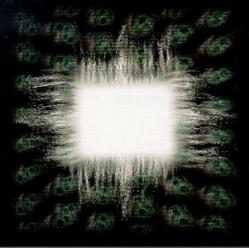

AEnema
Ænima es el segundo álbum de estudio de la discografía de la banda de metal progresivo Tool. Cuenta con 15 canciones, y fue publicado en 1996, a través del sello Volcano Records. El título proviene de una mezcla de las palabras anima y enema, que puede significar limpieza de alma.
 Undertow
Undertow
Undertow es el álbum debut oficial de Tool, salió al mercado en 1993. Fue certificado doble platino por la RIAA el 14 de mayo de 2001.